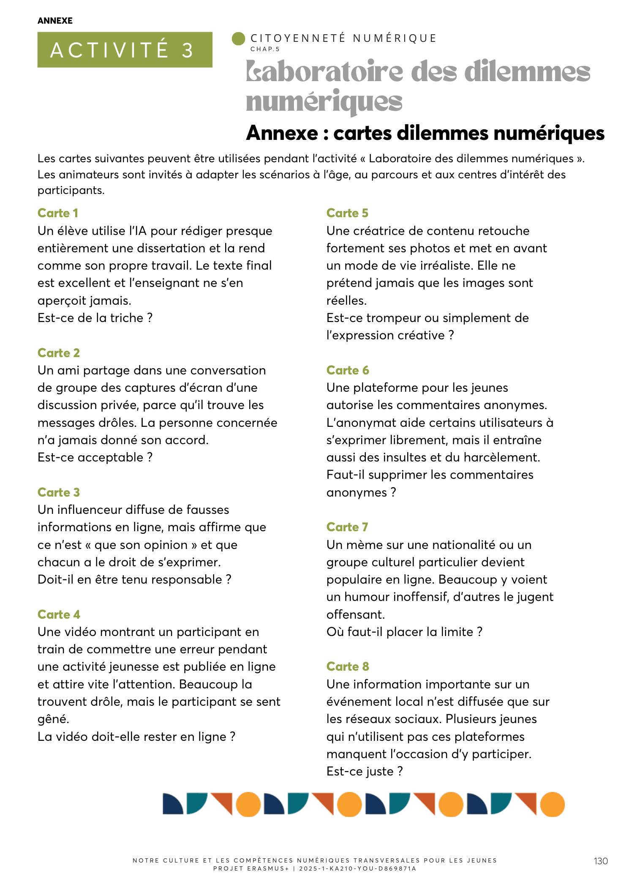

Fiche d’activité : cliquez sur l’image pour l’ouvrir dans un nouvel onglet, ou téléchargez le PDF ci-dessous.
Extrait du Chapitre 5 · Citoyenneté numérique

Fiche d’activité : cliquez sur l’image pour l’ouvrir dans un nouvel onglet, ou téléchargez le PDF ci-dessous.